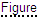

Le document interactif peut être utilisé dans deux modes différents :
L'interface utilisateur du document interactif se compose de deux espaces de travail : fenêtre de données et fenêtre 3D/2D. Chaque espace de travail possède ses propres éléments de contrôle.
Pour obtenir de l'aide, cliquez sur le bouton Aide dans le coin inférieur droit du document interactif.
|
La fenêtre de données contient la zone Titre et les onglets suivants : Prérequis, Nomenclature, Ressources, Instructions et Document.
La zone Titre affiche des informations générales sur les instructions de travail. Par exemple, code de tâche, type de travail, temps prévu.
L'onglet Prérequis décrit les conditions qui doivent être remplies avant de démarrer la procédure technique. L'onglet est actif lors de la première ouverture du document interactif.
L'onglet Nomenclature affiche une liste de pièces en retrait. Chaque enregistrement de Nomenclature fournit les informations suivantes sur une pièce : Numéro de pièce, Description, Quantité et Numéro de pièce alternatif.
Quand l'utilisateur clique sur l'enregistrement de Nomenclature, les objets correspondants sont ajustés et mis en surbrillance dans la fenêtre 3D.
Quand l'utilisateur place le pointeur au-dessus d'un enregistrement de Nomenclature, l'enregistrement et les objets correspondants sont mis en surbrillance dans la fenêtre 3D.
Quand l'utilisateur clique sur le signe plus, la hiérarchie est développée.
L'onglet Ressources décrit les ressources nécessaires à l'exécution de la procédure technique.
L'onglet Instructions comprend les sections suivantes : Tâche actuelle, Pièces requises, Ressources requises. La section Tâche actuelle affiche un texte pour la tâche en cours.
Le texte peut contenir des liens hypertexte vers des objets 3D et des images 2D. Le texte qui contient un lien vers un objet 3D est souligné par une ligne en pointillés. Quand l'utilisateur clique sur le texte souligné, l'objet correspondant est sélectionné et ajusté dans la fenêtre 3D.
Le texte qui contient un lien vers une image 2D est souligné par une ligne pointillée (par exemple ). Quand l'utilisateur clique sur le texte souligné, l'image correspondante s'ouvre dans la fenêtre 2D.
La section Pièces requises affiche les données de nomenclature uniquement pour les pièces qui contiennent des liens vers les objets 3D correspondants.
La section Ressources requises affiche les ressources requises pour la tâche en cours.
L'onglet Document affiche le texte complet de l'instruction de travail.
En mode Job, l'utilisateur peut cliquer sur le bouton Déconnexion pour passer à la tâche suivante de l'instruction. La tâche précédente affiche l'heure et la date à laquelle vous avez cliqué sur le bouton Déconnexion pour cette tâche (par exemple, Déconnexion : Mercredi 21 juillet 2010 12:47:10 ). L'affichage de la date et de l'heure n'est possible que dans la session en cours car ces données ne sont pas stockées n'importe où.
La boîte de message Inspection requise peut s'afficher pendant la lecture de la procédure. La tâche correspondante affiche le temps et les données lorsque vous cliquez sur le bouton Fermer dans la boîte de message Inspection requise (par exemple Inspecté : Mercredi 21 Juillet 2010 12:48:57 ). L'affichage de la date et de l'heure n'est possible que dans la session en cours.
En mode Aperçu, le fait de cliquer sur la tâche voulue de la procédure met en surbrillance la tâche dans l'onglet Document et rejoue la procédure. En mode Tâche, seule la tâche en cours est disponible pour être rejouée.
Le texte du document peut contenir des liens hypertexte vers des objets 3D et des images 2D (Voir l'onglet Instructions).
La fenêtre 3D fournit une représentation 3D de la procédure décrite dans l'onglet Document. Dans la fenêtre 3D, l'utilisateur peut rejouer la procédure à l'aide de la barre Rejouer et naviguer à l'aide des boutons de la souris. Le positionneur (par exemple, le trièdre d'axes) dans le coin supérieur droit de la fenêtre 3D vous permet de déterminer la position spatiale de l'unité ou de la pièce.
Boutons de contrôle de la lecture de la procédure dans la fenêtre 3D.
| Commande | Objectif |
|---|---|
| Lire | Démarre la lecture de la procédure si elle est arrêtée ou suspendue. |
| Pause | Arrête la lecture à l'étape courante. |
| Arrêter | Arrête et rembobine l'étape courante jusqu'au début. |
| Déconnexion |
Disponible en mode Job. Active la tâche suivante : la tâche est mise en surbrillance dans l'onglet Document et le moment correspondant de la procédure est lu dans la fenêtre 3D. La tâche précédente dans l'onglet Document affiche l'heure et la date à laquelle le bouton Déconnexion a été cliqué pour cette tâche. |
|
Paramètres |
Afficher ou masque la liste des paramètres. Vitesse. Définit la vitesse de lecture. Geler point de vue. Si sélectionné, verrouille la caméra sur la vue courante, empêchant ainsi le mouvement de la caméra pendant que la procédure est rejouée. Désactiver les messages d'alerte. Si sélectionné, désactive les messages d'alerte de la procédure pendant la lecture. PMI. Si sélectionné, les données PMI s'affichent. Les Informations sur fabrication du produit (PMI) représentent des attributs non géométriques dans la conception 3D assistée par ordinateur nécessaires pour la fabrication des composants de produit ou des sous-systèmes. Eclairage de scène. Définit le nombre de sources de lumière et leur emplacement pour éclairer le modèle dans la fenêtre 3D. Les positions relatives des sources de lumière sont affichées à droite de la liste. Toutes les sources de lumière se déplacent avec l’afficheur. Afficher le cube de navigation. Affiche ou masque le cube de navigation dans la fenêtre 3D. Le cube de navigation comporte trois types de zones de HotSpot : arête, coin et face. Lorsque vous positionnez le pointeur sur l'arête, le coin ou la face du cube de navigation, la zone correspondante est mise en surbrillance. Avec ces zones, vous pouvez basculer entre les vues standard et effectuer des rotations. Afficher les arêtes de surface. Si sélectionné, permet d'afficher les contours de surface dans la fenêtre 3D. Anticrénelage. Active une technique pour minimiser les artefacts de distorsion dans la fenêtre 3D. Occlusion ambiante. Active l'ombrage de l'occlusion ambiante et la technique de rendu dans la fenêtre 3D. Mode de sélection. Spécifie la représentation des objets pour la sélection dans la fenêtre 3D. Contraster avec une couleur – la sélection est mise en surbrillance. Radiographier les objets sélectionnés – les objets apparaissent gris et translucides, à l'exception de la sélection. Coque transparente – la coque externe du modèle entier apparaît translucide, les objets internes non sélectionnés sont masqués. Entourer les objets survolés. La sélection est entourée. |
Affiche la progression de la lecture. Le fait de cliquer sur la barre permet de choisir le moment désiré de la procédure.
Boutons pour l'ajustement, l'affichage, le masquage et la création d'objets transparents sélectionnés dans la fenêtre 3D.
| Interface utilisateur | Bouton | Objectif |
|---|---|---|
| Afficher les objets sélectionnés dans une fenêtre distincte |

|
Si cette option est activée, la sélection s'affiche dans la fenêtre 3D secondaire. |
| Ignorer la transparence |

|
Si cette option est activée, permet de cliquer à travers les objets transparents dans la fenêtre 3D, car les objets transparents ne réagissent plus au clic de l'utilisateur. |
| Tout restaurer |

|
Affiche tous les objets masqués et semi-transparents. |
| Ajuster | Ajuste à la fenêtre 3D le cadre de délimitation des objets sélectionnés. | |
| Afficher |

|
Rend visible les objets sélectionnés qui étaient masqués précédemment dans la fenêtre 3D. |
| Masquer |

|
Masque les objets sélectionnés dans la fenêtre 3D. |
| Ne rien sélectionner |

|
Permet de désélectionner tous les objets. |
| Transparence | Permet de définir la valeur de transparence pour les objets sélectionnés. La commande Transparence est disponible si un ou plusieurs éléments sont sélectionnés dans la fenêtre 3D. |
Les objets sélectionnés apparaissent dans la fenêtre 3D secondaire.
| Interface utilisateur | Bouton | Objectif |
|---|---|---|
| Définir le centre |

|
Permet de spécifier le centre de rotation du modèle 3D. |
| Afficher le centre de rotation | Permet d'afficher ou de masquer le centre de rotation. | |
| Ajuster tout | Permet de rendre l'ensemble du modèle 3D entièrement visible dans la fenêtre 3D. | |
| Aligner l'horizon |

|
Positionne l'axe horizontal (mais pas longitudinal) de la caméra parallèlement au plan horizontal dans le système de coordonnées. |
| Mesurer |

|
Ouvre l'outil permettant de mesurer une distance. Dans la fenêtre 3D, cliquez simplement une fois sur un point, puis cliquez à nouveau sur le deuxième point. La distance entre les deux points rouges doit ensuite s'afficher. Pour obtenir la distance entre les points projetés sur le plan vertical ou horizontal, sélectionnez le nom du plan de projection dans la liste. Pour modifier l'unité de longueur, sélectionnez Unités. Pour définir la longueur des lignes de référence, faites glisser le curseur H. Sélectionnez Garder visible pour rendre la ligne de dimension visible après avoir fermé l'outil de mesure. Pour définir de nouveaux points, cliquez sur Effacer ou appuyez sur la touche Echap, puis spécifiez des points dans la fenêtre 3D.
WARNING N'utilisez pas les résultats de mesure directement dans le traitement car l'illustration 3D peut différer du produit réel. Pour obtenir les dimensions nécessaires à la fabrication ou à la maintenance, reportez-vous à la documentation technique appropriée. |
| Plan de section |

|
Affiche le modèle comme s'il avait été coupé par un plan. Utilisez les contrôles pour définir (Gauche, Haut, Avant) et faire pivoter (X et Y) le plan de section. Pour déplacer le plan de section, faites glisser le curseur D. Utilisez Inverser pour mettre en miroir la section. Sélectionnez le Mode Précis pour améliorer la précision des curseurs. Sélectionnez Garder visible pour rendre la section visible après avoir fermé l'outil. Pour déplacer le plan de section vers le centre de la sélection, cliquez sur Réinitialiser. |
| Face |

|
Affiche le modèle vu de l'avant. |
| Précédent | Affiche le modèle vu de l'arrière. | |
| Gauche |

|
Affiche le modèle vu du côté gauche. |
| Droite |

|
Affiche le modèle vu u côté droit. |
| Haut |

|
Affiche le modèle vu du haut. |
| Bas |

|
Affiche le modèle vu du bas. |
| Isométrique |

|
Affiche le modèle dans une vue isométrique. |
Cliquez avec le bouton de droite n'importe où dans la fenêtre 3D pour accéder au menu contextuel.
| Commande | Objectif |
|---|---|
| Réinitialiser | Réinitialise la vue de l'étape de la procédure. |
| Ajuster tout | Rend les objets entièrement visibles dans la fenêtre 3D. |
| A propos | Affiche les versions du document interactif, de l'afficheur 3D et de l'afficheur 2D. |
La fenêtre 2D affiche des images vectorielles et tramées associées à la procédure décrite dans la fenêtre Données.
La fenêtre 2D remplace la fenêtre 3D lorsque l'utilisateur clique sur un lien hypertexte d'image 2D dans la fenêtre Données (onglet Instructions ou onglet Document).
Cliquez avec le bouton droit dans la fenêtre 2D pour accéder aux commandes contextuelles disponibles. La liste des commandes varie selon l'afficheur 2D utilisé dans la fenêtre 2D.| Opération | Action Utilisateur |
|---|---|
| Panoramique | Déplacez la souris tout en maintenant le bouton de gauche enfoncé. |
| Zoom | Tournez la molette de la souris vers l'avant ou l'arrière. |
| Aide |

|
Fournit un système d'aide pour l'interface utilisateur. |
| 3D | Ouvre la fenêtre 3D. |